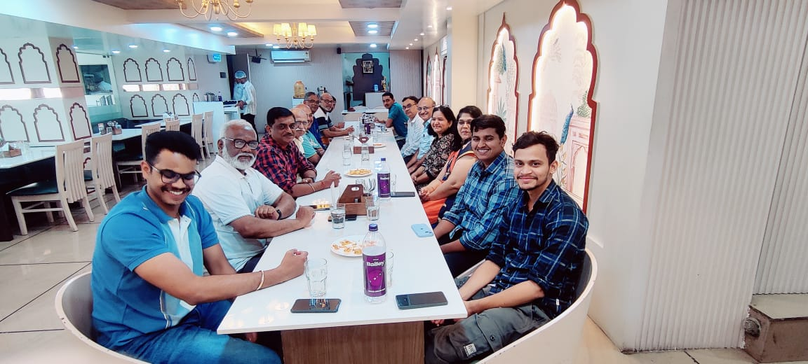
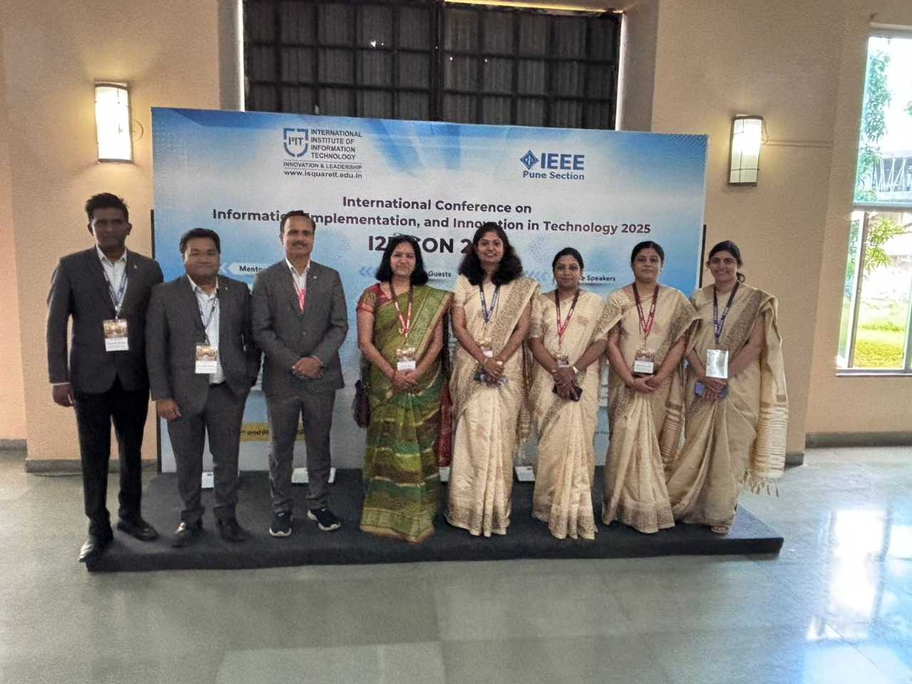
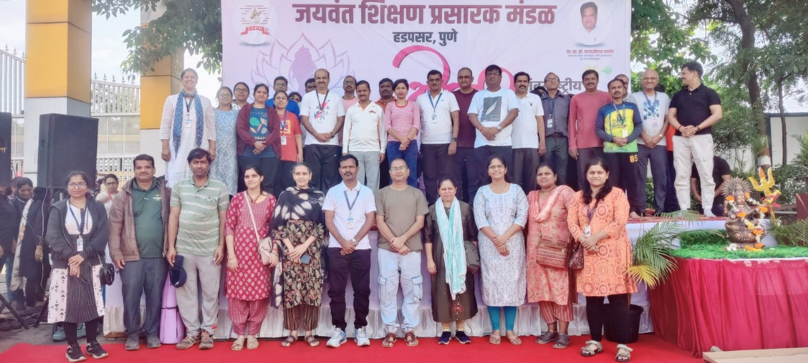
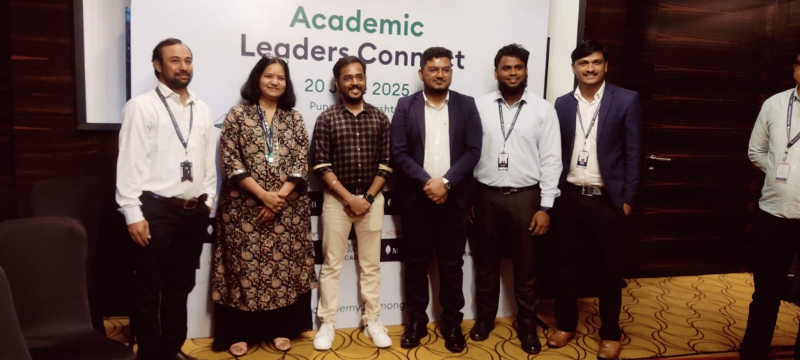
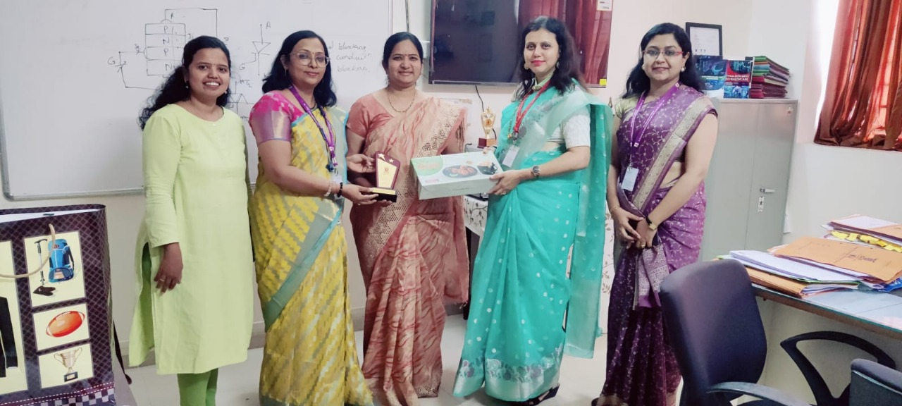
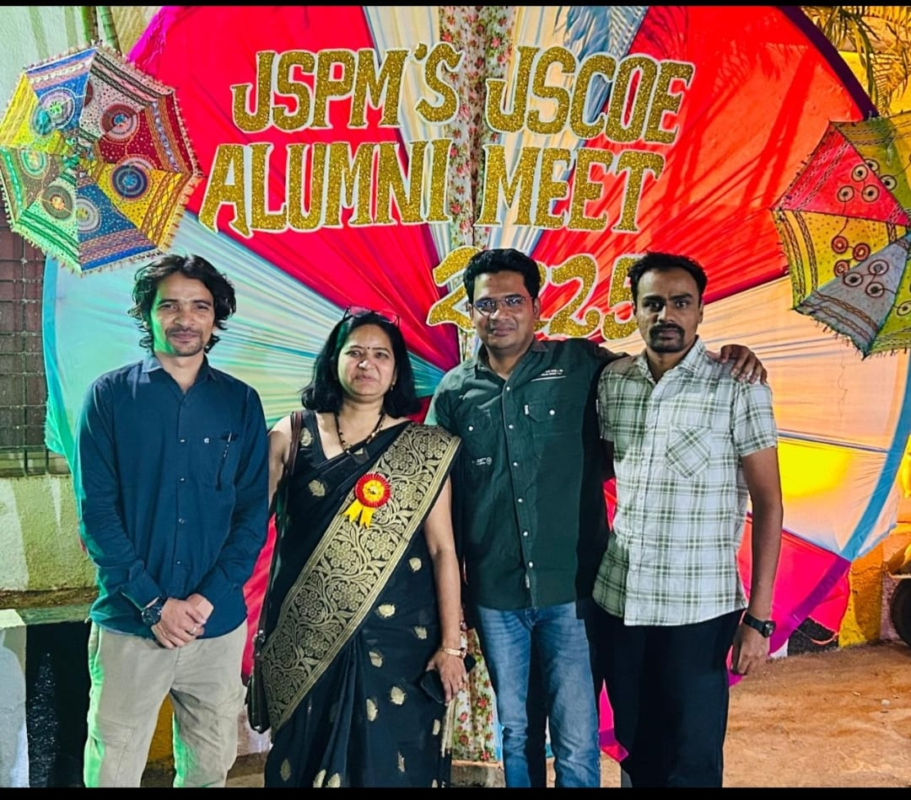
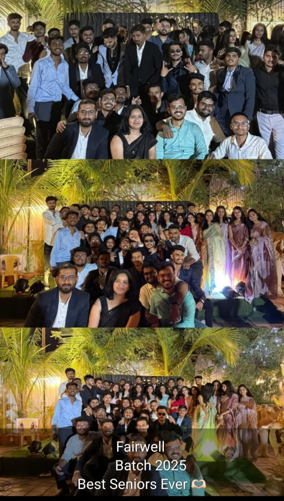
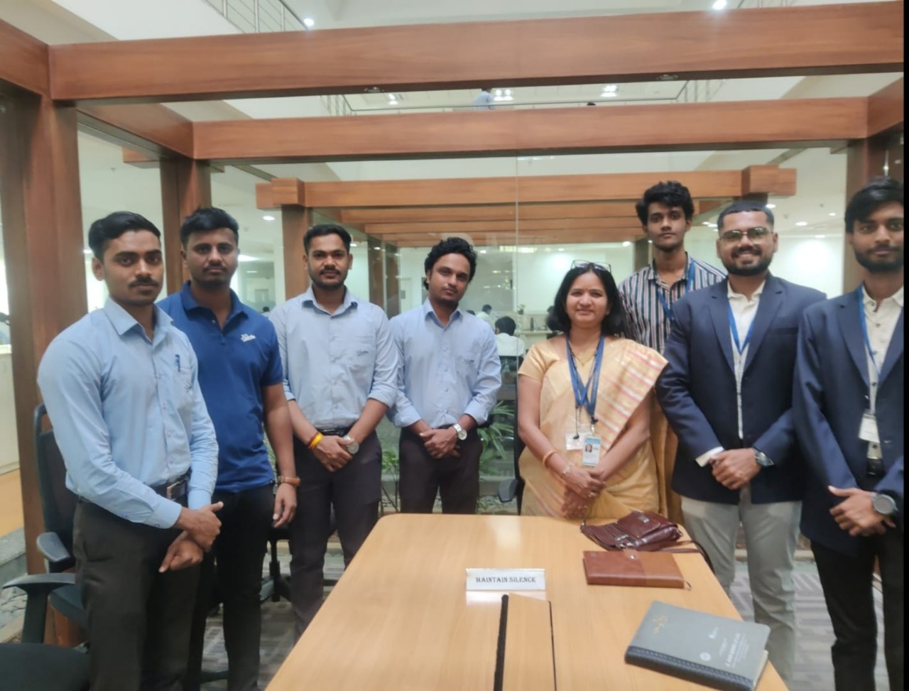
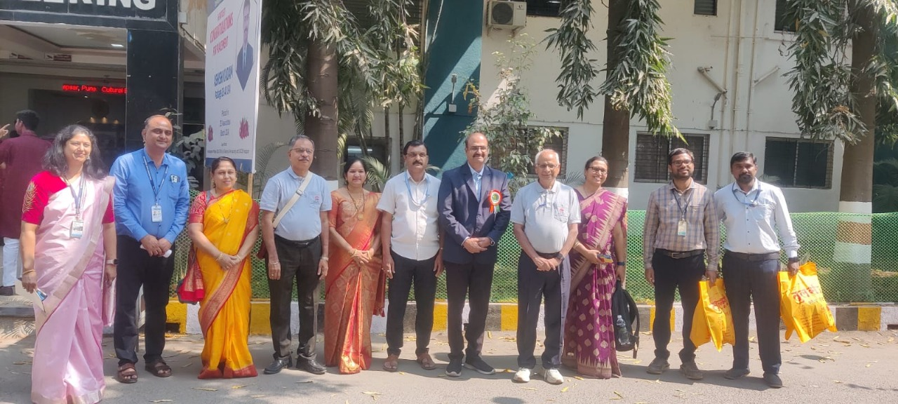

Dr. Poonam Lambhate
Professor & Head of Department – Computer Engineering, JSPM JSCOE, Pune
Academic & Research Links
Profiles & Identifiers
-
ORCID:
0009-0000-3998-7429 -
Scopus ID:
57204107713 -
Researcher ID:
JLL-9168-2023 -
Google Scholar:
yk68p5gAAAAJ -
Vidwan:
Vidwan Profile
Areas of Interest
Research & Skills
- Area of Interest: Search Engine, Image Processing, AI & ML
- Research Interest: Search Engine, Image Processing, AI & ML
- Technical Skills: C, C++, Data structure and Core-Java, DBMS, Python
- Certifications: NPTEL, Coursera
- Professional Membership and Contributions: ISTE (LM 41157)
Teaching Subjects
Courses Taught
- Programming and Problem Solving
- Discrete Structure
- Object Oriented Modeling and design
- Database Management System
- Information System Retrieval
- High performance Database
- Business Intelligence and Data Mining
- Operational Research
- Data Mining HPC
Experience
| Years | Designation | Department | Institution/Organization | Location |
|---|---|---|---|---|
| 2022 - Present | Head of the Department | Computer Engineering | JSPMs Jayawantrao Sawant College of Engineering, Handewadi Road, Hadapsar | Pune |
| 2006 - 2022 | Head of the Department | Information Technology | JSPMs Jayawantrao Sawant College of Engineering, Handewadi Road, Hadapsar | Pune |
| 2004 - 2005 | Assistant Professor | Information Technology | JSPMs Rajarshi Shahu College of Engineering | Pune |
| 2001 - 2004 | Assistant Professor | Computer | Bharati Vidyapeeths College of Engineering, Navi Mumbai | Mumbai |
Qualification
| Year | Degree | University/Institution |
|---|---|---|
| 2018 | Ph.D. | Pacific University |
Honours and Awards
| Year | Award/Honour | Awarding Body/Institution |
|---|---|---|
| 2007 | Awarded First Prize | Jyothishmathi College of Engg. and Technology, Thurkapally(V) |
Publications (43)
| Title of Paper | Type of Publication | Journal/Conference Name & Details | Year of Publication |
|---|---|---|---|
| Interactive Document Knowledge Companion for Automatic Information Retrieval Using LangChain | Article | LIBERTE JOURNAL, Volume 13, Pages 108-113 | 2025 |
| Optimizing Coal Transport: Forecasting and Scheduling with Prophet and Linear Programming | Journal-Article | Journal For Basic Sciences | 2025 |
| Integrating Machine Learning Algorithm for Automation of Smart Village Data | Journal-Article | Journal For Basic Sciences | 2025 |
| Optimizing Coal Transport: Forecasting and Scheduling with Prophet and Linear Programming | Article | Journal For Basic Sciences, Volume 25, Pages 257-263 | 2025 |
| RAG-Based Legal Document Assistant for Automated Legal Document Management and Advice | Article | International Journal of Scientific Research in Engineering and Management (IJSREM), Volume 9, Pages 1-7 | 2025 |
| Optimizing Coal Transport: Forecasting and Scheduling with Prophet and Linear Programming | Article | Journal For Basic Sciences, Volume 25, Pages 257-263 | 2025 |
| Integrating Machine Learning Algorithm for Automation of Smart Village Data | Journal-Article | Journal For Basic Sciences | 2025 |
| Optimizing Coal Transport: Forecasting and Scheduling with Prophet and Linear Programming | Journal-Article | Journal For Basic Sciences | 2025 |
| Utilizing A Hybrid Gru Intrusion Detection System To Improve The Security Of Iot-based Smart Farming | Article | Journal For Basic Sciences, Volume 24, Pages 164-180 | 2024 |
| Renewable-Powered Antenna Design for Energy-Efficient Wireless Networks | Article | International Journal of Intelligent Systems and Applications in Engineering, Volume 12, Pages 501-523 | 2024 |
| Utilizing A Hybrid Gru Intrusion Detection System To Improve The Security Of Iot-based Smart Farming | Article | Journal For Basic Sciences, Volume 24, Pages 164-180 | 2024 |
| Automated Segmentation Of Hyaline Cartilage In Knee Mri Images: A Novel Approach | Article | NOVYI MIR Research Journal, Volume 9, Pages 93-105 | 2024 |
| Renewable-Powered Antenna Design for Energy-Efficient Wireless Networks | Article | International Journal of Intelligent Systems and Applications in Engineering, Volume 12, Pages 501-523 | 2024 |
| BLOCKCHAIN-POWERED INTERNET OF THINGS: OVERVIEW, CURRENT PATTERNS, USES, AND UPCOMING DIFFICULTIES | Journal-Article | BLOCKCHAIN-POWERED INTERNET OF THINGS: OVERVIEW, CURRENT PATTERNS, USES, AND UPCOMING DIFFICULTIES | 2024 |
| WSN TECHNOLOGY-BASED IOT-BASED SMART AGRICULTURE SYSTEM FOR INSECT AND PEST IDENTIFICATION, CROP STATUS PREVENTION | Journal-Article | WSN TECHNOLOGY-BASED IOT-BASED SMART AGRICULTURE SYSTEM FOR INSECT AND PEST IDENTIFICATION, CROP STATUS PREVENTION | 2024 |
| An Effective Allocation Scheme for Resources in Edge Computingenabled Networks with Uncertain Network Status | Article | DASTAVEJ RESEARCH JOURNAL, Volume 54, Pages 15 | 2024 |
| MACHINE LEARNING BASED ON GRAPHS FOR PREDICTIVE MODELING IN INTRICATE NETWORK DATA | Article | Journal of University of Shanghai for Science and Technology, Volume 26, Pages 19 | 2024 |
| BLOCKCHAIN-POWERED INTERNET OF THINGS: OVERVIEW, CURRENT PATTERNS, USES, AND UPCOMING DIFFICULTIES | Journal-Article | BLOCKCHAIN-POWERED INTERNET OF THINGS: OVERVIEW, CURRENT PATTERNS, USES, AND UPCOMING DIFFICULTIES | 2024 |
| WSN TECHNOLOGY-BASED IOT-BASED SMART AGRICULTURE SYSTEM FOR INSECT AND PEST IDENTIFICATION, CROP STATUS PREVENTION | Journal-Article | WSN TECHNOLOGY-BASED IOT-BASED SMART AGRICULTURE SYSTEM FOR INSECT AND PEST IDENTIFICATION, CROP STATUS PREVENTION | 2024 |
| SMART CITIES CAN GENERATE EFFICIENT POWER FROM GARBAGE THROUGH THE INTEGRATION OF IOT AND LSTM-MLP | Journal-Article | Journal of Informetrics | 2024 |
| UTILIZING A HYBRID GRU INTRUSION DETECTION SYSTEM TO IMPROVE THE SECURITY OF IOT-BASED SMART FARMING | Journal-Article | Journal For Basic Sciences | 2024 |
| An Effective Allocation Scheme for Resources in Edge Computingenabled Networks with Uncertain Network Status | Journal-Article | DASTAVEJ RESEARCH JOURNAL | 2024 |
| MACHINE LEARNING BASED ON GRAPHS FOR PREDICTIVE MODELING IN INTRICATE NETWORK DATA | Journal-Article | Journal of University of Shanghai for Science and Technology | 2024 |
| USING RANDOM FORESTS AND INTERNET OF THINGS SENSORS TO OPTIMIZE PREDICTIVE MAINTENANCE IN SMART FACTORIES | Journal-Article | COMPUTER RESEARCH AND DEVELOPMENT (ISSN NO:1000-1239) VOLUME 24 ISSUE 10 | 2024 |
| Implementation of Machine Learning Algorithms in Iot Smart Shoe Helping Rehabilitation for Visually Challenged People | Journal-Article | Journal for Re Attach Therapy and Developmental Diversities | 2023 |
| Renewable-Powered Antenna Design for Energy-Efficient Wireless Networks | Journal-Article | INTELLIGENT SYSTEMS AND APPLICATIONS IN ENGINEERING(ijisae) | 2023 |
| INTERNET OF THINGS INTEGRATED REMOTE PATIENT MONITORING SYSTEM | Journal-Article | High Technology Letters | 2023 |
| CONVERGENCE OF AI AND SELF-SUSTAINABILITY ETHICAL AND SOCIAL IMPLICATIONS | Journal-Article | Technische Sicherheit | 2023 |
| CONVERGENCE OF AI AND SELF-SUSTAINABILITY ETHICAL AND SOCIAL IMPLICATIONS | Article | Technische Sicherheit, Volume 23, Pages 164-180 | 2023 |
| INTERNET OF THINGS INTEGRATED REMOTE PATIENT MONITORING SYSTEM | Article | High Technology Letters, Volume 29, Pages 417-424 | 2023 |
| Detection of Arrhythmia using Single-Lead ECG and Deep Neural Network | Article | IJARSCT, Volume 3, Pages 2 | 2023 |
| Automation of Candidate Hiring System Using Machine Learning | Article | International Journal of Innovative Science and Research Technology, Volume 8, Pages 5 | 2023 |
| Road Accident Detection and Prediction System | Article | IJERT, Volume 12, Pages 5 | 2023 |
| Implementation of Machine Learning Algorithms in Iot Smart Shoe Helping Rehabilitation for Visually Challenged People | Article | Journal for Re Attach Therapy and Developmental Diversitiese, Volume 6, Pages 6 | 2023 |
| Hybrid Algorithm on Semantic Web Crawler for Search Engine to Improve Memory Space and Time | Conference-Paper | 2021 6th International Conference for Convergence in Technology, I2CT 2021 | 2021 |
| SENTIMENT ANALYSIS FOR LIFESAVING | Article | IJARCET, Volume 5, Pages 6 | 2020 |
| Performance Evaluation of Adaptive Algorithms for Speech Improvement | Conference-Paper | 5th International Conference on Computing Engineering and Design, ICCED 2019 | 2019 |
| Survey Paper on Multimedia Recommendation System with User Behaviour Information | Article | IJRECE, Volume 6, Pages 5 | 2018 |
| Survey Paper on Multimedia Recommendation System with User Behaviour Information IJRECE | Article | IJRECE, Volume 6, Pages 5 | 2018 |
| Web Pattern Mining Using Eclat | Article | IJCA, Volume 179, Pages 6 | 2017 |
| AssociationRule on Vertically Partitioned Data | Conference-Paper | 2017 International Conference on Computing, Communication, Control and Automation, ICCUBEA 2017 | 2017 |
| Classroomwiki: Collaborative learning tool along with content relevancy predictor system | Article | IJCSIT, Volume 6 (3), Pages 4 | 2015 |
| Performance Evaluation of Adaptive Algorithms for Speech Improvement | Article | IEEE, Volume 5th, Pages 6 |
Projects and Research
| Title of Projects | Research | Duration | Funding Agency | Amount Sanctioned |
|---|---|---|---|---|
| Synthesis of Antenna Array (STAR) | Synthesis of Antenna Array (STAR) | 2 Years | DRDO Bangalore | 7 Lakhs |
Book Details
| Book Title | Year | Publisher |
|---|---|---|
| Programming and Problem Solving | Jan 2020 | Technical |
| Information Retrieval | May 2007 | Nirali |
Patent Details
| Patent Details | Year |
|---|---|
| Efficient Framework for Frequent Item Pattern Mining on Dynamic Data of Semantic Web Crawling |
Other Activities
| Title of Activity | Details of Activity |
|---|---|
| HOD, Admission, Departmental all activities Look up, QIP Co-ordinator, Academic Monitoring | HOD, Admission, Departmental all activities Look up, QIP Co-ordinator, Academic Monitoring |
Membership In Committees
| Committee | Year |
|---|---|
| BOS Member Information Technology, SPPU | 2022 |
Gallery
Felicitated by Honorable Dr. T. J. Sawant Sir as SPPU BOS IT member

Meeting with TechnnovXP software company

Session chair for IEEE conference

Session chair for IEEE conference

ICT academic meet at JW Marriot on MangoDB

Session Chair for conference at K.J. College of Engineering

Alumni Meet 2025

Farewell 2025 Batch

Industry visit to Kirloskar Brothers

Shiv Jayanti Uthasv